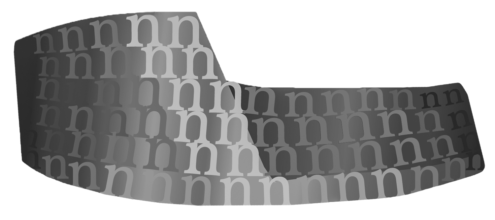
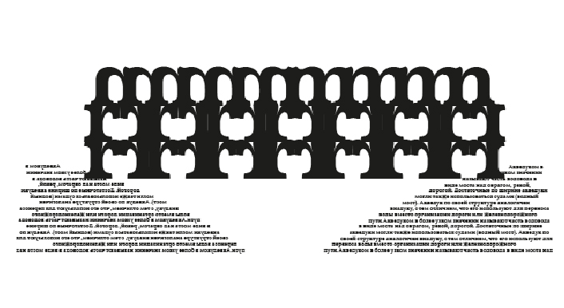

Основание Рима
Рим был основан в 753 г. до н. э., но задолго до этого здесь жили другие племена. Археологические раскопки открыли нам остатки поселений 12 века до н.э., но мифы говорят о временах еще более древних. Согласно легенде здесь жили боги, один из них Янус одарил своим гостеприимством самого Сатурна (греч. Кронос), свергнутого с Олимпа. Он и стал первым правителем холма Капитолия, основав поселение, которое жило в мире и счастье, без рабства и нужды.
Здесь же на соседнем холме Палатине жил ужасный Какус, державший в страхе всех вокруг, но его смог одолеть Геракл. Да, он тоже был здесь и вынужден был сражаться с уродливым огнедышащим чудовищем, дабы вернуть себе украденных быков Гериона. На этом холме в память о подвиге Геракла до сих пор существует Какиева лестница, а недавно неподалеку были найдены остатки алтаря, посвященного Гераклу.
Архитектура
Первые крупные постройки производились по этрусскому примеру, возможно, даже этрусскими мастерами; поэтому Римская архитектура при самом своём зарождении усвоила в себе важнейшую форму этрусского зодчества — арку, то есть полукруглое каменное покрытие, перекинутое с одного устоя на другой, и сложенное так, что соприкасающиеся между собой стороны составляющих его отдельных камней расположены по направлению радиусов круга, удерживаются своим взаимным распором и передают общее давление тому и другому устою. Употребление этой архитектурной формы и происходящих от неё коробового свода, крестового свода и купола.

Однако в целом, римская архитектура испытала сильное влияние греческой архитектуры. В своих сооружениях римляне стремились подчеркнуть силу, мощь, величие, подавляющие человека. Для сооружений характерны монументальность, пышная отделка зданий, множество украшений, стремления к строгой симметрии, интерес к утилитарным сторонам архитектуры, к созданию преимущественно не храмовых комплексов, а зданий для практических нужд. Такая архитектурная форма и происходящие от нее своды дало римлянам возможность придавать большое разнообразие их сооружениям.
Достопримечательности
Рим один из интереснейших городов мира, вечный город, первоисточник Западной цивилизации, центр одной из самых могущественных империй в истории мира. Возраст Рима уже скоро перешагнёт рубеж в 3 тысячелетия! Можно лишь отдалённо представить, сколь многочисленны достопримечательности Рима – этот сокровенный источник практически неисчерпаем. Древние руины исторических сооружений, сокровища музеев под открытым небом, многочисленные храмы и барочные фасады роскошных вилл – это лишь малый пример тех богатств, что посмотреть в Риме стоит каждому его гостю, чтобы понять, какую колоссальную историю хранит этот город.

Хотя акведуки больше всего ассоциируются с римлянами, они были изобретены столетиями ранее на Ближнем Востоке, где вавилоняне и египтяне строили сложные системы. Акведуки римского стиля использовались уже в VII столетии до н. э., когда ассирийцы строили акведук из известняка высотой 10 метров и длиной 300 метров, чтобы переносить воду поперёк долины в свою столицу, Ниневию; полная длина акведука составляла 80 километров. Примерно в то же время, акведуки использовались в городах майя. Самым выдающимся акведуком Геродот считал Эвпалинов тоннель на острове Самос. Этот акведук историк включил в чудеса света.
Инстаграм: @Anna_Nevaooo
VK: Anna_Nevaooo
Группа: Сладкие Суперконфетки